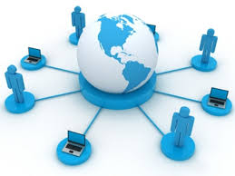
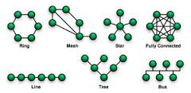

LA RETE
CLOUD
 Con il termine cloud ci si riferisce a un insieme di tecnologie e di modalità di fruizione di servizi informatici che favoriscono l’utilizzo e l’erogazione di software, la possibilità di conservare e di elaborare grandi quantità di informazioni via Internet. Il cloud offre, a seconda dei casi, il trasferimento della conservazione o dell’elaborazione dei dati dai computer degli utenti ai sistemi del fornitore. Il cloud consente, inoltre, di usufruire di servizi complessi senza doversi necessariamente dotare né di computer e altri hardware avanzati, né di personale in grado di programmare o gestire il sistema. Tutto può essere demandato all’esterno, in outsourcing, e a un costo potenzialmente limitato, in quanto le risorse informatiche necessarie per i servizi richiesti possono essere condivise con altri soggetti che hanno le stesse esigenze.
Spesso utilizziamo tecnologie cloud senza neppure saperlo. Alcuni dei più diffusi servizi di posta elettronica o di elaborazione testi sono “sulle nuvole”. Anche molte delle funzioni offerte dai cellulari di nuova generazione (i cosiddetti smartphone) sono basate sul cloud: ad esempio quelle che sfruttano la geolocalizzazione consigliandoci i locali o gli esercizi commerciali più vicini, che consentono di ascoltare musica o di accedere a giochi on line, nonché tante altre funzioni e “app”(applicazioni).
Con il termine cloud ci si riferisce a un insieme di tecnologie e di modalità di fruizione di servizi informatici che favoriscono l’utilizzo e l’erogazione di software, la possibilità di conservare e di elaborare grandi quantità di informazioni via Internet. Il cloud offre, a seconda dei casi, il trasferimento della conservazione o dell’elaborazione dei dati dai computer degli utenti ai sistemi del fornitore. Il cloud consente, inoltre, di usufruire di servizi complessi senza doversi necessariamente dotare né di computer e altri hardware avanzati, né di personale in grado di programmare o gestire il sistema. Tutto può essere demandato all’esterno, in outsourcing, e a un costo potenzialmente limitato, in quanto le risorse informatiche necessarie per i servizi richiesti possono essere condivise con altri soggetti che hanno le stesse esigenze.
Spesso utilizziamo tecnologie cloud senza neppure saperlo. Alcuni dei più diffusi servizi di posta elettronica o di elaborazione testi sono “sulle nuvole”. Anche molte delle funzioni offerte dai cellulari di nuova generazione (i cosiddetti smartphone) sono basate sul cloud: ad esempio quelle che sfruttano la geolocalizzazione consigliandoci i locali o gli esercizi commerciali più vicini, che consentono di ascoltare musica o di accedere a giochi on line, nonché tante altre funzioni e “app”(applicazioni).
LA STORIA DI INTERNET

La nascita di INTERNET risale al 1969, quando il governo
degli Stati Uniti fece progettare una rete militare finalizzata
allo scambio di informazioni veloce e sicuro, che fosse in
grado di connettere sistemi diversi e distanti fra loro e che
fosse capace di funzionare anche con più nodi guasti o
distrutti. Questa rete, sviluppata da un’agenzia del
Dipartimento della Difesa denominata ARPA (Advanced
Research project Agency) fu chiamata ARPANET. Essa era
in grado di funzionare anche dopo un disastro nucleare,
essendo costituita da moduli che mettevano un computer in
grado di comunicare con un altro seguendo stade diverse:
quando una strada risulta ostacolata i messaggi seguono strade alternative (instradamento delle
informazioni, routing). L’aspetto più importante era il modo con il quale un computer comunicava
con un altro. Di questo si occupa il protocollo IP (Internet Protocol), un protocollo che garantisce la
comunicazione anche tra computer diversi e con sistemi operativi diversi. Questa rimane una delle
caratteristiche fondamentali di INTERNET.Nel 1972 già veniva utilizzata la posta elettronica (e-mail) il
collegamento remoto (Remote Login) e il trasferimento di file FTP
(File Transfer Protocol), servizi oggi dispobnibili in INTERNET.
Nel 1990 al CERN (Centro Europeo per la Ricerca Nucleare di Ginevra)
alcuni ricercatori informatici - Tim Bernes-Lee in primo luogo - incaricati di
realizzare un sistema per la condivisione tra utenti diversi di dati sia testuali
che non testuali (immagini, suoni, filmati), basandosi sul concetto di ipertesto, hanno dato origine al
linguaggio HTML (Hyper Text Markup Language) che consente, oltre che a gestire informazioni di
diversa natura (testuali e multimediali), anche di collegare diversi documenti tra di loro mediante
opportuni link. Questo linguaggio è divenuto lo strumento più potente per distribuire informazioni
in Internet ed ha introdotto quella architettura denominata WWW (World Wide Web), la “ragnatela
di dimensioni mondiali” che consente la navigazione, cioè la consultazione semplice e veloce degli
archivi e dei documenti presenti nei computer della rete.
LA RETE
Per rete informatica s’intende un insieme di computer o elaboratori e di altri dispositivi collegati tra loro da archi di collegamento.
Sono molti i criteri in base ai quali si possono classificare le reti.
1. TECNOLOGIE DEL MEZZO TRASMISSIVO (doppino telefonico, cavo coassiale, fibra ottica, onde radio, misto);
2. TECNICHE DI COMMUTAZIONE (circuito, messaggio, pacchetto)
3. TOPOLOGIA DELLE CONNESSIONI (maglia, bus, anello, stella,ecc)
4. TIPO DI GESTIONE (privata, pubblica)
5. RELAZIONE ESISTENTE TRA I CALCOLATORI COLLEGATI (client/server, sistemi distribuiti)

Le reti in base alla loro dimensione geografica sono:
? LAN: sono reti di superficie ridotta caratterizzate da alte prestazioni e mezzi trasmessivi molto veloci.
? WAN: si parla di wan quando l’estensione della rete supera qualche km e l’unione avviene tramite il suolo pubblico.
? MAN: si ha quando la rete copre un’intera area urbana ed è la fibra ottica.
I computer collegati in una LAN comunicano inviandosi dei pacchetti che contengono gli indirizzi del mittente, e del ricevente, e l’insieme di dati scambiati. Gli elaboratori sono collegati tra loro tramite HUB e SWITCH.
Hub: è un ripetitore in pratica trasmette tutti i pacchetti che riceve su tutte le porte. I pacchetti generano una quantità elevata di traffico (per l'invio dei pacchetti su tutte le porte). Per questo motivo può essere utilizzato solo all'interno di reti di piccole dimensioni. In alcuni hub possiamo trovare un led che segnala il traffico di rete.
Switch: permette di dirigere il traffico sulle porte interessate dalla comunicazione perché le informazioni vengono trasmesse solo alle porte interessate.
Gli HUB e SWITCH sono usati spesso nella stessa rete in quanto il primo amplifica la rete fornendo un numero maggiore di porte, la seconda divide la rete in sezioni più piccole e meno congestionate.
VARI TIPI DI RETE LAN
1. ETHERNET
2. FAST ETHERNET
3. GIGABIT ETHERNET
La differenza è solo nella velocità.
Dovete sapere che le Reti Ethernet (10 Mbps), e Fast Ethernet (100 Mbps) utilizzano il protocollo di comunicazione CSMA/CD che permette ai dispositivi presenti in una Rete di parlare uno per volta. Ciò significa, che se due dispositivi tentano di colloquiare contemporaneamente può verificarsi una collisione, e quindi essi interrompono l’invio dei pacchetti tentando un po’ più avanti la comunicazione.